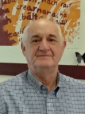

Dra. Claudia Bauzer Medeiros

Claudia Bauzer Medeiros es profesora a tiempo completo de Bases de Datos en el Instituto de Computación de la Universidad de Campinas (Unicamp), Brasil y miembro de la Academia Brasileña de Ciencias. Ella ha recibido reconocimientos en Brasil
y a nivel internacional en investigación, enseñanza y también por su trabajo en el fomento de la participación de las mujeres en actividades relacionadas con las tecnologías de la información.
Dr. Francisco Tirado

Francisco Tirado es Catedrático de Arquitectura y Tecnología de Computadores en la Universidad Complutense de Madrid. Ha trabajado en diferentes campos dentro de la Arquitectura de Computadores, Procesamiento Paralelo y Automatización del
Diseño. Sus áreas de investigación actuales son algoritmos y arquitecturas paralelas, diseño de procesadores. El profesor Tirado ha sido coautor de más de 300 publicaciones.
Dr. Raimundo Macêdo

Raimundo Macêdo es profesor titular en el Departamento de Ciencias de la Computación y jefe del Laboratorio de Sistemas Distribuidos (LaSiD) de la Universidad Federal de Bahía (UFBA) en Brasil. Tiene un Ph.D. en Ciencias de la Computación
de la Universidad de Newcastle upon Tyne (Inglaterra). Es el actual presidente de la Sociedad Brasileña de Computación (SBC) y consejero de la IFIP. Fue miembro del Comité Directivo de CLEI de 2011 a 2016.